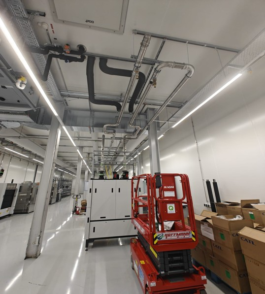

Battery Production Line Equipment
- Employer
- Project Engineering & Contracts NV
- Period
- Mar 2024 – Jun 2026
- Location
- Leuven, Belgium
- Field
- Battery production equipment
My work covered the full life of a design rather than a single stage of it: mechanical design of automated line components — principally conveyor solutions and water cooling systems for battery testers — for battery filling, sealing, processing and testing facilities. Because I followed my own designs through to installation, I saw directly which decisions held up and which did not, and that feedback loop changed how I design. It also meant constant contact with other disciplines and with technicians, and dealing with the problems that only surface once equipment meets a real building. The equipment is customer-specific, so I cannot share drawings or project detail, but the images below give a sense of the work.

